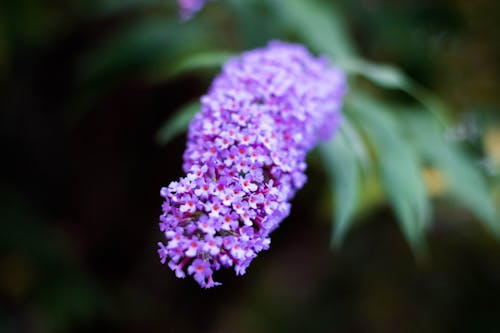

BUDDLEJA

O que é?
A Buddleja é um arbusto rústico e vigoroso, famoso por suas inflorescências longas e pontiagudas compostas por centenas de pequenas flores. Originária da Ásia, ela é mundialmente celebrada por seu perfume inebriante que lembra mel, sendo uma das plantas mais eficientes para dar vida e movimento ao jardim.
Como cuidar?
A Buddleja é bem resistente, mas aqui estão os segredos para ela brilhar:
- Luz: Sol pleno sempre! Ela precisa de muita luz para produzir suas hastes florais.
- Solo: Não é exigente, mas prefere solos bem drenados. Ela tolera solos mais pobres e secos depois de estabelecida.
- Poda: Essa é a chave! Deve ser podada drasticamente no final do inverno para estimular novos crescimentos e flores maiores.
- Rega: Moderada. Evite deixar o solo encharcado por muito tempo.
Curiosidades
- Ímã de Borboletas: Seu nome popular não é por acaso; o perfume e o néctar atraem dezenas de espécies de borboletas e polinizadores.
- Crescimento Rápido: É um arbusto que cresce muito rápido, podendo atingir até 3 metros em poucos anos.
- Cores Variadas: Embora o roxo seja o mais comum, existem variedades em branco, rosa, azul e até amarelo.
- Resistência: É uma planta extremamente adaptável e resistente à poluição urbana.